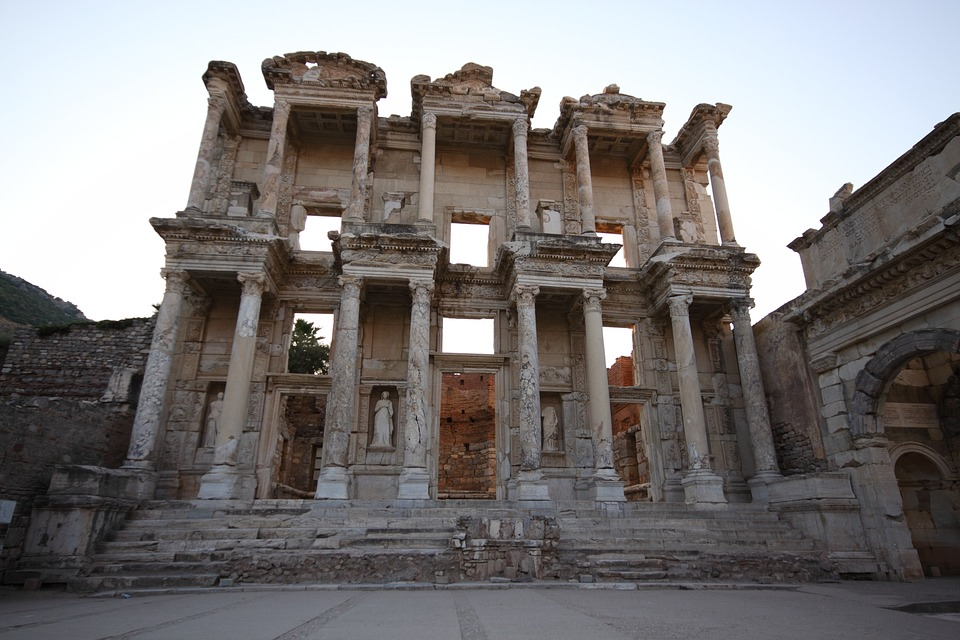

Turkish Time Capsules: Exploring Ancient Marvels Across Anatolia
Turkey is a veritable treasure mine of historical marvels, with a diverse range of civilizations having shaped its terrain. For those with an interest in history and archaeology, the following are some must-see historical sites in Turkey:
Cappadocia
Located in the center of Turkey, Cappadocia is a country of bizarre scenery, historic cave houses, and fascinating history. Enter this exotic location and set off on a fantastic voyage through soaring rock formations, unearthed underground towns, and breathtaking scenery that looks like it belongs in a fantasy.
The Land of Fairy Chimneys

Cappadocia is well-known for its unusual geological features, or "fairy chimneys," which are tall, cone-shaped rock pillars that resemble venerable sentinels dotting the countryside. These breathtaking natural wonders, sculpted over millions of years by wind and water erosion, are truly amazing, especially when lit up by the golden light of dawn and sunset. Explore the well-known valleys in the area, such as Göreme, Zelve, and Love Valley, where tourists may go hiking, biking, or take a hot air balloon ride to take in the breathtaking views from above.
The Underground Cities

Ancient civilizations carved out an underground realm of cities beneath the surface of Cappadocia to evade invasions and extreme weather. The most well-known of these is Derinkuyu, a massive underground complex that goes down multiple floors and was formerly home to thousands of people along with their supplies and animals. Discover the city's chambers, ventilation shafts, and winding tunnels. You'll be amazed at the ancient people's inventiveness and technical prowess.
The Rock-cut Churches of Göreme

The amazing collection of Byzantine-era rock-cut churches and monasteries can be found in Göreme Open Air Museum. These churches include beautiful paintings that represent scenes from the lives of Christ, the Virgin Mary, and the saints, and they are carved into the soft tufa rock. Discover the rich religious heritage of the area and admire the exquisite artwork in the several chapels, dining halls, and monk cells.
The Whirling Dervishes of Cappadocia
Visitors visiting Cappadocia can take in a traditional Sufi ceremony conducted by the Whirling Dervishes for a fully immersive cultural experience. These captivating customs, called Semas, feature chanting and a succession of elegant dance steps that stand for spiritual enlightenment and oneness with the divine. Taking place in evocative locations like historic caravanserais or subterranean cathedrals, these shows provide a singular window into Turkey's ethereal past.
Plan Your Journey to Cappadocia
As you get ready to travel to Cappadocia, give yourself plenty of time to really appreciate the breathtaking scenery and fascinating history of this magical place. The treasures of Turkey's cultural legacy will amaze and inspire you during your trip to Cappadocia, whether you're a history buff, a nature lover, or just an inquisitive tourist.
Traveling to Cappadocia is an experience unlike any other, as it combines colorful culture, breathtaking landscapes, and ancient history. It gives guests the opportunity to go on a fantastical voyage across time and space with its fairy chimneys, underground civilizations, rock-cut churches, and ethereal rituals. Come explore Cappadocia's attractions and experience the enchantment of this unique location for yourself.
Ephesus

An archaeological gem tucked away in the Aegean area of Turkey. This historic city, rich in mythology and history, transports tourists to the era of Greek and Roman glory, when lively streets, imposing buildings, and magnificent temples were the norm.
A Glimpse into History
The history of Ephesus begins when it was founded as an Ionian colony in the tenth century BCE. It developed over the ages into one of the biggest and wealthiest cities in antiquity, acting as a crucial center for trade, culture, and spirituality. As the provincial capital of Asia, Ephesus flourished under Roman authority and was well-known for its exquisite architecture, lively marketplaces, and dynamic populace.
Exploring the Ruins of Ephesus
Today, tourists to Ephesus may explore its well-preserved ruins, which offer a fascinating peek into its famous history. Admire the Library of Celsus's majestic exterior and elaborate statues, or stroll around the vast Agora, where merchants used to sell their wares and philosophers used to discuss the meaning of life. Discover the exquisite mosaics, frescoes, and marble carvings that adorn the walls of the Terrace Houses, where affluent Ephesians lived in opulent luxury.
The Spectacular Theater
The magnificent theater at Ephesus, one of the biggest and best-preserved in the ancient world, is one of the city's highlights. Constructed into the slope of Mount Panayir, the theater held political gatherings, gladiatorial matches, and theatrical productions with a capacity of over 25,000 spectators. Even now, guests are still in awe of its soaring columns, expansive arcades, and gorgeous vistas of the surrounding landscape.
The Temple of Artemis
One of the Seven Wonders of the Ancient World, the Temple of Artemis, must be revered in order for a trip to Ephesus to be considered complete. Even though there isn't much of the temple left now, tourists can nevertheless explore its ruins and take in the enormity of its previous splendor. The temple, which was devoted to the goddess Artemis, was a major hub for the city's religious life and was a place of pilgrimage and worship for centuries.
Plan Your Journey to Ephesus
Take some time to become fully immersed in the rich history and cultural legacy of Ephesus as you get ready to travel there. Whatever your interest—history, architecture, or just plain curiosity—Ephesus offers a once-in-a-lifetime adventure that will leave you amazed and informed by the treasures of antiquity.
Ephesus is a monument to the inventiveness, resourcefulness, and tenacity of its prehistoric occupants. With its stunning structures, ruins, and extensive history, it provides visitors with a one-of-a-kind chance to journey back in time and take in the magnificence of a past era. Come see Ephesus' attractions and experience the enchantment of this historic city for yourself.
Hierapolis-Pamukkale

A historical and natural wonder of Turkey tucked away amid stunning scenery and recognized as a UNESCO World Heritage Site. Enter this historic wonderland and go on a voyage back in time, where the region's rich cultural legacy is revealed by the hot springs, tumbling travertine terraces, and well-preserved ruins.
The Ancient City of Hierapolis
Established in the 2nd century BCE by the Pergamon Kingdom, Hierapolis flourished as a Greco-Roman metropolis renowned for its restorative thermal springs and breathtaking structures. Explore the impressive theater, the colossal gateways, and the holy necropolis, where the old streets are lined with finely carved sarcophagi, among the other well-preserved ruins.
The Healing Waters of Pamukkale
Pamukkale, a natural wonderland famous for its breathtaking travertine terraces and thermal springs, is located next to Hierapolis. The terraces fall down the mountainside, creating a series of brilliant white pools that seem to shine in the sunlight. The terraces were formed over thousands of years by the calcium-rich streams that flow from the neighboring hills. The springs, which have been valued for their medicinal qualities since ancient times, allow visitors to relax and enjoy the warm waters.
The Cleopatra Pool
The Cleopatra Pool is a big hot pool surrounded by lush foliage and historic ruins, making it one of Pamukkale's highlights. According to legend, Cleopatra herself swam in these waters because she thought they had restorative qualities. These days, guests can submerge themselves in the warm, mineral-rich pool's waters, which are supposed to have restorative properties for their bodies and skin.
The Archaeological Museum of Hierapolis
An exploration of Hierapolis' past should definitely take place, and this requires a trip to the Archaeological Museum. The museum, housed in a former Roman baths, has an abundance of exhibits and artifacts, like as coins, statues, ceramics, and inscriptions, that provide insight into the history of the city. Highlights are the exquisitely carved reliefs from the Temple of Apollo and the well-known statue of Aphrodite of Hierapolis.
Plan Your Journey to Hierapolis-Pamukkale
As you get ready to travel to Hierapolis-Pamukkale, give yourself plenty of time to enjoy the natural beauty and rich history of this historic location. The beauties of Turkey's cultural legacy will amaze and inspire you throughout your visit to Hierapolis-Pamukkale, whether you're a history buff, a nature lover, or just an inquisitive visitor.
The monuments of Hierapolis-Pamukkale attest to both the eternal beauty of nature and the continuing legacy of the ancient world. It provides visitors with a singular chance to reenergize their bodies and spirits and establish a connection with history through its breathtaking terraces, historic ruins, and therapeutic waters. Come explore Hierapolis-Pamukkale's attractions and experience the enchantment of this unique location for yourself.
Troy

A place lost in myth and legend where the reverberations of a long-gone civilization continue to reverberate. Located in the northwest of present-day Turkey, Troy is a historically significant archaeological site that is remembered as the scene of the legendary Trojan War in Homer's epic poem, the Iliad. Come along with us as we explore this legendary city's fascinating history through a time travel.
The Mythical Origins of Troy
Greek mythology states that King Priam, the mythical hero, established Troy and named it after his son Troilos. Its legendary beginnings are obscured by tradition; the pages of old literature are replete with stories of gods, goddesses, and valiant warriors. The most well-known of these is the tale of the Trojan War, a battle that finally brought about Sparta's destruction between the Greeks and Trojans over the beautiful Helen.
Exploring the Archaeological Site
Today, tourists can explore the more than 4,000-year-old ruins of this ancient city when they visit Troy. The layers that make up the archaeological site each correspond to a distinct era of Troy's history, from the Early Bronze Age to the Roman era. The formidable city walls, the remnants of the defensive towers, and the recognizable wooden horse—which has come to represent the city's mythical past—are among the highlights.
The Archaeological Museum of Troy
The on-site Archaeological Museum offers visitors additional opportunities to gain a greater understanding of Troy's history and archaeology. The museum, which is housed in a contemporary structure close to the site's entrance, has an amazing collection of artifacts found during excavations, including sculptures, weapons, jewelry, and ceramics. Highlights include recreations of daily life in Troy as well as the renowned Trojan Gold, a cache of riches uncovered from the ancient city.
The Nearby Attractions
In addition to Troy, adjacent sites that provide insights into the rich history and culture of the area can be found by visitors. The historic city of Assos, renowned for its striking acropolis and stunning views of the Aegean Sea, is only a short drive away. Further afield, the remains of Ephesus and Pergamon provide an opportunity to discover more historic Anatolian cities, each with a distinct allure and significance.
Plan Your Journey to Troy
Spend some time getting acquainted with Troy's extensive past and fabled culture as you get ready to travel there. Regardless of your interest in history, mythology, or just general curiosity, Troy guarantees an amazing trip that will captivate and motivate you with the treasures of antiquity.
Troy is more than just a myth; it's a real connection to the past, a location where legend and history collide to provide a journey that will never be forgotten. It gives visitors the opportunity to travel back in time and become fully immersed in the epic story of the Trojan War with its ancient ruins, archaeological treasures, and legendary charm. Come explore Troy's attractions and experience the enchantment of this fabled city for yourself.